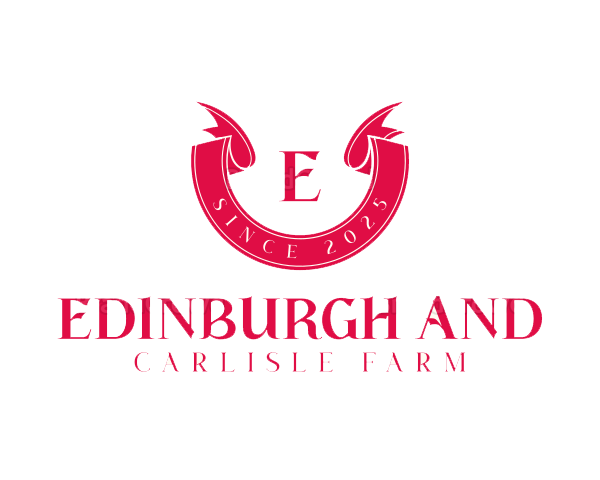
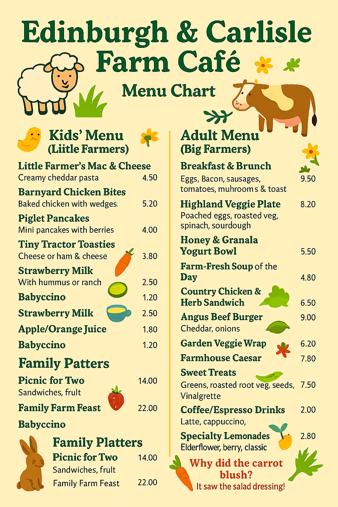

The Edinburgh and Carlisle Café sits at the heart of a welcoming farm and petting‑zoo landscape, offering visitors a warm retreat surrounded by open fields, gentle farm animals, and the relaxed rhythms of rural life. Families can enjoy the comforting scent of freshly baked goods drifting out toward the paddocks, where goats, rabbits, and friendly ponies greet guests throughout the day. With its rustic wooden interiors, cosy seating, and farm‑fresh ingredients sourced right from the surrounding land, the café serves hearty soups, warm pastries, and seasonal dishes perfect for recharging after exploring the grounds.
Outdoors, the café opens into a lively, child‑friendly courtyard where little ones can enjoy animal encounters while adults unwind with a cup of locally roasted coffee. Benches and picnic tables look out over grazing areas, making it an ideal place to relax, enjoy a meal, and soak in the countryside atmosphere. Whether you're visiting for the animals, a peaceful rural escape, or a wholesome meal made with local produce, the Edinburgh and Carlisle Café blends farm charm with genuine hospitality—creating a memorable stop for all ages.
Our main menu includes delicious dishes both suitable for kids and adults.
